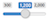

Introduction
The purpose of this app is just to visualise the expression of genes
as a time course after immunisation, either alone or when clustered
into modules.
The basic concept is to pick a particular time point and vaccine - e.g.
Day 7 after immunisation with Boostrix - and then sort the
probes or genes values present in the array as they are on that time
point in persons who received that vaccine. So you may have the
probes ordered in descending order by their value (fold-increase
from baseline or mean expression) at that time in those people who
got Boostrix. Why do this? Well, because with over 60k probes you
have to order them somehow. The grouping of vaccine - time point is
actually a natural grouping and as you use the tool this becomes
clear, if a bit counterintuitive when comparing between vaccines.
Having ordered the top or bottom probes, you can then select the
probes or genes into a group of interest - e.g. the top 10
fold-increased genes on day 7 after Boostrix. This set of
selected genes becomes the core building-block of subsequent
analysis. You can identify how the expression of these
genes changes over time; which modules these genes belong to;
observe how the other genes in those modules are responding over
time, or how the whole module responds over time. You can treat
these selected genes as a 'pseudo-module' and see how this module
changes over time in comparison with the predefined modules in tmod.
Other search options allow you to identify genes by their title or
category, and then follow these selected genes and the modules that
contain them over time.
There is also an option to go straight to exploring by modules, in
which case you just select tmod modules and observe their response
over time. Modules can be selected in the the same way as individual
probes or genes - by identifying those most up- or down-regulated
modules on a particular day after a particular treatment; or by
searching for modules by name or category. But the basic concept is
the same: how do the tmod modules respond after immunisation and how
does this compare when we select individual genes? Are there other
gene groupings that may be better? Do some modules have so many
non-responding genes that they are not representative? Could we
cluster new modules?
This is beta software and may experience bugs and crashes. The
software depends on the R package tmod 'Feature Set Enrichment
Analysis for Metabolomics and Transcriptomics' (description), created by January Weiner. I
have reverse engineered some aspects of tmod and any errors arising
from this are mine. Consult the tmod documentation or vignette for a description of the modules.The
transcriptomics datasets are from the BIOVACSAFE project (www.biovacsafe.eu),
and were generated by the group of Stefan Kaufmann at MPIIB, Berlin
and provided by Jeroen Maertzdorf and January Weiner. I have
generated the probe averages per time point and any errors there are
mine. The trials were conducted at the University of Gent by Geert
Leroux-Roels, and at the University of Surrey by me. Source files
for the shiny app are available at
www.github.com/djmlewis/tmodexplorer. The shiny app is online
at djmlewis.shinyapps.io/tmodexplorer
Plots
Plots may take some time to appear - be patient!
The more rows you select for plotting the slower it will be.
ggplot2 is not good at providing progress updates - so it may look
like nothing is happening. Some plots are drawn automatically and
these offer the choice of using R base graphics (faster) or
ggplot2 (slower but may be prettier). Other plots have a Plot
button, and will only draw or update when that is clicked, to
avoid slow refreshes when you alter several options. Plots have a
slider control  to change the height. Plot width always resizes
automatically with the window width. A low resolution image of
plots can be copied or saved by right-clicking on the plot, while
clicking ⤓ Plot As PNG button downloads a high resolution
image. The plotting parameters are not sophisticated, but
generally the data used to create the plot are in a table below
and can be saved and imported into R for re-plotting. Some tables
can be saved as PNG files to incorporate with plots as graphics.
Identifying data on line plots by hovering over points
When data are plotted as Lines it is sometimes difficult
to identify the individual data series by colour. They can be
identified by hovering the mouse cursor over a point (or
where a point would be plotted if you are not displaying points).
Hovering over line segments between points does nothing. A
notification window will appear displaying the data for this
point, which can be copied. It will disappear after 15 seconds, or
be updated if a new point is selected. If lines are bunched then
use the slider above the plot to increase the height.
Data Tables
The entire data table can be searched using the box above, or
individual columns searched using the boxes below each column.
Tables can be downloaded as a csv file suitable for opening in Excel
or R by clicking the ⤓ Table button. A PNG image of the
datatable can also be downloaded in some cases by clicking the
button ⤓ Table as PNG. This can be pasted onto graphics. It
is very tricky to calculate the width correctly using grid.table, so
the image may be clipped or extra wide, but a transparent background
will be generated.
Saving Gene, Probe and Module Lists
When you have selected genes, probes or modules using some filters,
they can be downloaded as a text file in a comma-separated format
suitable for pasting into the 'regex' search boxes.
The Datasets
The preloaded datasets come in two versions: fold-increase in
the log2 expression values (by subtraction of the log2
values), always from day 0 baseline (in Surrey day
-1 is calculated as a time point preceding day 0); and raw
log2 expression values. Day 0 at 8AM was selected for Surrey
as baseline as participants entered the unit on day -1. The data
were calculated by initially grouping the raw data for each
person-each probe-each timepoint, into treatment and timepoint
pools. Then row averages for each probe within the treatment-time
pool were calculated. This gives the basic raw expression data
which is the group mean for each vaccination-day for each probe.
One group of datasets, based on limma-normalised
expression values, consists of the protocol-defined grouping
of the vaccines and associated placebo group (which may have
only ~6 participants in Surrey):
- A Surrey Stamaril-Varilrix-Placebo
- C Surrey Aggrippal-Fluad-Placebo
- D Gent Fluad-Placebo
- D2 Gent Boostrix-Placebo
An exception is Surrey Engerix B. Here the participants
were naive and received a priming vaccination alongside a placebo
group: this is indicated as ENGERIXB and PLACEBO in the same way
as the others above. The same participants then had a second
immunisation (first boost) without any systems biology. They then
came for a third immunisation (second boost) on day 167. This is
represented in the dataset as EngerixB3 and PLACEBO3. The time
points for ENGERIXB3/PLACEBO3 have been adjusted so that 167
becomes -1, and 168 day 0. Fold-increase is then calculated
from this adjusted day 0, as the response to the third
immunisation. Thus the ENGERIXB and PLACEBO may be pooled with the
other Surrey trials, but the ENGERIXB3 and especially the PLACEBO3
should be treated with caution as they are the same persons
repeated. This dataset therefore has the pattern:
- B Surrey EngerixB-Placebo-EngerixB3-Placebo3
I have also included a combined Surrey dataset in which the
vaccines in A, B and C are all together, based on agilent-normalised
expression values. In this case the PLACEBO group contains all ~21
participants pooled from ABC - without the PLACEBO3 group as
described for B Surrey Engerix B above. PLACEBO3 (the
subjects who repeated) are presented as a separate group. This is a
large dataset and so can be slow, but allows very convenient
comparison between vaccines. This dataset therefore has the pattern:
Instructions For Use
Password
When running on the shinyapps.io server the software requires a
password. This is to protect the datasets. Please contact
d.j.lewis@surrey.ac.uk to be given the password. Enter the password
and click the button to unlock the menus. When running locally no
password is required.
Loading Data
You must load a dataset before you can do anything. The datasets are
already uploaded to the server. Select a dataset. Click Load. All
existing plots and data tables will be cleared. Note that some
datasets are fold-increase from baseline, whereas others are actual
expression values. The fold-increase are more useful. All data have
been collated as a mean for each treatment group on each day. All
expression values and fold-increases are log2. Once you click "Load"
the name of the data set will appear below the tabs, and two more
tabs will appear:
- Explore By Probe
- Explore By Module
Explore By Probe tab
Select this tab to explore the datasets using individual probes in
the array. The idea is to choose a time point and a treatment, and
then sort the probes based on their values (gene expression or
fold-increase) in that column, and then additionally filter by
keyword search or value. Note - if you include more that 200 rows
then plots are slow to draw. Do not click "Plot" buttons or "Apply"
again as the cycle just repeats!
Select tab - probes
You must click the green Apply Selections button before any
filters or selections are applied, and again after any changes. This
is to speed-up calculations.
Pick a column to sort that has the treatment-time
combination you want to explore. The "column" is the basic unit for
tmodExplorer - it combines a treatment and a time point, e.g.
"Boostrix_7" contains mean values on day 7 for participants who
received Boostrix. All data sets are based on these columns. Time
series plots will indicate the sorted column with ▼▲.
Sort descending for highest values in top rows. Select Gene
Averages to have expressions of individual probes that map to
a gene averaged into one row, otherwise it will be one probe per row
and genes may repeat. This is important if you restrict by "Sorted
Row Numbers": e.g. if you select 10 rows and have Gene
Averages selected you may include many more than 10 probes,
but if Gene Averages is not selected you just get the top 10
probes which may map to less than 10 genes. As the modules work in
genes, it is probably better to select Gene Averages, unless
you specifically want to follow distinct probes. A disadvantage of
gene averages is that you lose the gene descriptions, which are
probe-specific. Toggling between averaged and probe-alone settings
lets you see what these genes are, alternatively use the Gene
Lookup tab to lookup genes by their names and see the probe
descriptions.
Once you click Apply Selections, several other tabs will
appear to allow visualisation of the genes and modules. The search
terms you included appear below the tabs.
Filters
Filters are applied one after another, left to right - first the
keyword regex search, then the value restriction,
finally which rows to include. Probably you will always use
Sorted Column Row Numbers to restrict the number of sorted
probes, possibly alone or in combination with either regex
or Sorted Column Values. Never, ever try to search with no
filters selected - it will return all 65k+ probes, very slowly,
and I have set a block on this.
Regex - keyword search
"Regex" is a keyword, free-text search that uses regex, with some
limitations. In tmodExplorer multiple terms can be entered into the
box separated by commas and are OR'd (search returns as many of
those terms as it can find, treating each term separately). Do not
include spaces (especially after the comma) or quotation marks
unless you want them included in the search. Spaces will be
stripped-out automatically for you in Gene and Probe
name searches, so you can easily paste in lists copied from tables.
For Description searches the spaces are left in so beware:
regex is "literal" so if you type "B cell" it is going to
look for "B cell" - including the "". You can
enter partial terms e.g. interferon finds interferon and
interferons, as regex looks for those characters anywhere.
Upper/lower case is ignored. Commas are interpreted as search term
dividers and cannot be 'escaped'. Beware including special regex characters
by mistake. Select whether to search gene description or gene name,
or probe ID. Probe is least useful as they are not very standardised
between datasets.
Regex search actually ignores the selected column and any values -
it just finds rows in the data set that match the search. However,
those rows will be sorted in order of the value in the "Selected
Column", and filtered on these values. You may want to switch off
the Sorted Column Row Numbers when using regex as it may
reduce the number of free-text hits you would have found. However,
beware returning hundreds of rows as the app will freeze for a long
time. Consider setting some Sorted Column Values limits. You
can also paste saved search lists into the regex box that
you downloaded from the Selected Probes tab, or copied from
one of the Lookup tables - be sure to match Gene and Probe
Name. This allows fairly easy repetition of searches across
datasets.
Sorted Column Values
Max/min expression values will be pre-entered for you into the range
boxes when selecting a column, using floor() and ceil() and so will
deliberately exceed the actual values. Click Column to reset
to max/min for selected column, or Data for max/min of whole
dataset in all columns. Value restrictions apply only to values in
the column selected for sort - so you will filter based on the
values in the column you selected.
Sorted Column Row Numbers
It is probably a good idea to keep this selected, as over 200 rows
is slow to calculate and plot. You can restrict rows to have top N
or bottom N rows, or have a slice. If there are fewer rows available
after the previous selections than you requested you will get a
cryptic warning. Row restrictions apply to the sorted values
in the column selected for sort - so you will filter based on
the values in the column you selected.
Selected Probes tab
A data table showing the probes or genes (if averaged) that meet the
filter settings is shown and can be downloaded. The values shown are
those in the "Column" you selected. You may use the search boxes
above and below the table to further restrict the rows for viewing
in the table, but this has no effect on other tabs or plots. Click
"⤓ Gene List" or "⤓ Probe List" to save a comma-separated text file
that can be copy-pasted into the regex search box to quickly repeat
the search. Note a description appears when probes are displayed
individually, and disappears if "Gene Averages" is selected on the Select
tab. This is because descriptions are specific for probes.
Probes:Series tab
This allows the values of the probes or gene averages selected by
the filters to be plotted for over many treatment-time columns, to
visualise a time course.
Columns menu
Click 'All' to enter all columns, or select one by one from pop-down
menu and they appear in the box. Click 'None' to clear. The order of
the columns as they appear in the box is respected for all boxes
like this - so the x axis will retain the sequence you enter here,
unless it is plotting as an XY scatter using numerical values. Use
the cursor to move between entries to add or delete a column at that
point. Select an entry and delete.
Options
Split: the data are split by treatment using facet_wrap.
Column names are in the format VVV_TTT where VVV is a treatment name
and TTT is an integer value for time point. The app splits the
column name by '_' and facet_wraps by VVV while plotting TTT on the
x axis as a continuous variable.
Lines / Boxplot: XY graph of individual probes / genes, or a
boxplot summarising values when genes are averaged.
Points, Gridlines: show/hide.
Legend and Zero: show/hide these features.
Plot button: click this to draw the plot, and again after
changing any options.
Genes->Modules tab
This panel lists the selected probes or genes and shows which - if
any - modules contain the gene. Some genes you selected may not be
included in any modules.
Modules tab
A summary of the values of the individual probes contained in the
modules associated with the selected probes or genes is plotted
automatically. If you change any of the criteria on the Select
tab this plot will re-draw. There are options to show or hide the legend
and zero line, and to have ggplot2 graphics which are a bit
nicer but slower. ggplot2 calculates the dimensions of the box
slightly differently to base graphics. The genes selected by the
filters can also be plotted as a "pseudo-module", for comparison
with the tmod modules. The table gives the summary statistics
and the number of probes mapped to the modules' genes (N).
Modules->Genes tab
This expands the plot on the Modules tab to allow an
inspection of the modules, one by one, looking at all the genes each
module contains. The menu lists the modules associated with selected
genes or probes that were summarised on the Modules tab.
Select a module from the menu to see the expression of its component
genes. As each gene may have many probes a summary boxplot of the
expression values of the probes mapping to each of the the genes
inside the selected module is plotted automatically. Note that a
module may also contain genes that are not in the selection created
by the Select tab. Genes within a module that are in your
selection are denoted by the ︎► symbol next to the y axis, and in
the data table. You may be surprised by how few genes in a module
overlap with your selected genes. Options to show or hide the legend
and zero line are available, and to use ggplot2
instead of base graphics. ggplot2 uses a geom_boxplot with
default values. Unlike the Selected Probes tab which shows the gene
description in the table, the Module->Genes tab does not,
as the descriptions refer to the probes, and here gene
summaries are being shown.
Modules:Series (Probes)
tab
The Modules and Modules->Genes tabs only show the
expression values of probes in the one selected treatment-time
column. The Modules:Series tab allows the expression of the
associated modules to be plotted for all treatment-time columns as a
time course. To avoid delays when selecting options, nothing is
plotted or re-plotted until the green 'Plot' button is clicked. Add
treatment-time columns to the Columns menu. Add modules from
the ones associated with your selected probes or genes to the
Modules menu. Use All or None buttons to add
all, or clear selections. Various plot options exist:
Boxplot summarises the expression values of probes within the
module, while Lines plots a line graph of the mean
expression of probes in the modules. SEM appears when Lines
is selected allowing an SEM ribbon to be added.
Split - uses facet_wrap to separate treatments into different
panels.
Options to show / hide the legend and zero line
exist.
Gene Lookup tab
Enter a gene name or partial string and click Lookup to
see a table of matching genes. The search uses regex, so
see the entries above about filtering by keyword for issues with
regex. Spaces will always be stripped from this search as Gene
Names cannot have spaces. Multiple gene names can be entered
separated by commas. Alternatively, leave the box empty and click
Lookup to list all 65k genes. A list of probes with their
descriptions is shown. The search boxes above / below the table
can also be used.
Explore By Module tab
The concept is similar to the Explore By Probe tab. However,
here a data table is created in which the rows are sorted by the
mean or median value of the modules as expressed in the selected
treatment-time column: e.g. the median expression of the probes on
day 7 after Boostrix. It is important to note that tmod modules
contain only a fraction of all the genes in the probeset, but this
tab allows for an exploration of responses of the modules included
in tmod.
Select tab - modules
Like Select tab in Explore By Probe above, you first select
a column containing the treatment-time combination for which you
want to sort the modules. Then filter modules using the filters
(left to right) as described in Select tab for probes. In this case
the sorting is based on the mean or median expression (which you can
select) of the probes within the module. Sort descending has the
highest expression values in top rows. See the Select tab for
description of how to use regex, Sorted Column Values
and Sorted Column Row Numbers. Here it is the mean or median
expression of the module being sorted. Time series plots will
indicate the sorted column with ▼▲.
Regex searches either the Title (which is a
description of the module, e.g. "plasma cells") or Module
name (its designation e.g. DC.M4.11). Spaces will automatically be
stripped from Module searches but retained for Title searches.
You may want to switch off the Sorted Column Row Numbers
when using regex as it may reduce the number of hits you would have
found. However, beware returning 600 modules as the app will freeze
for a long time. Consider setting some Sorted Column Values
limits instead - this will be based on values in the selected sort
column. You can also paste saved search lists into the regex
box that you downloaded from the Selected Modules tab - be
sure to match Title and Module Name. This allows fairly easy
repetition of searches across datasets.
You must click the Apply Selections button to perform the
selection or after any changes to options. Clicking the button
reveals more tabs to visualise the modules.
Selected Modules tab
Like the Probes tab this tab plots a boxplot summary of the
probe expressions in the modules you selected. Options to show /
hide the legend and zero line exist, and to plot
using ggplot2 which is nicer, slower and draws the boxes slightly
differently to base graphics. You can colour the boxes as individual
modules by selecting Module, or as groups by their category
using Title.
Modules:Series (Modules) tab
This is very similar to the Modules:Series (Probes) tab as
it allows the expression of the selected modules to be plotted for
all treatment-time columns as a time course. Select treatment-time
columns to include from the Columns menu. Select which
modules to plot using one of the menus underneath:
Modules Selected By Filters menu lists the modules displayed
in the Selected Modules tab.
Titles In Dataset menu lists all the available titles in this
dataset - which group modules into functional categories. You
can save the selection by clicking the download button - to repeat
this selection (e.g. on another dataset) you must paste the
comma-separated text into the regex search box on the select
tab. You cannot paste into this menu box.
Modules In Dataset just lists all the modules available in
this dataset by their names. You can save the selection by clicking
the download button, but to repeat this selection (e.g. on another
dataset) you must paste the comma-separated text into the regex
search box on the select tab. You cannot paste into this menu
box.
Various plot options are available:
Boxplot plots a summary of the probe expressions in the
modules, whereas Lines plots the module mean
expression and reveals SEM to include an SEM ribbon.
Split plots each treatment in its own panel, and legend
and zero line can be shown or hidden.
The bars can be coloured by individual modules when Module
is selected, or by category Title.
Click Plot button to create the plot and data table, and
after any changes to module/column selections or options.
Module Lookup tab
Enter a module name (e.g. DC.M4.1) or partial string
(e.g. DC.M4) and click Lookup to see a table of
matching modules. The search uses regex, so see the
entries above about filtering by keyword for issues with regex.
Spaces will always be stripped from this search as Module Names
cannot have spaces. Multiple module names can be entered separated
by commas. Alternatively, leave the box empty and click Lookup
to list all modules. The search boxes above / below the table can
also be used. A list of modules with their descriptions and
associated genes is shown. These gene lists can be copied and
directly pasted into the regex search boxes that accept Gene
Names, spaces will be stripped for you.
Acknowledgements
tmodExplorer is written in R: R Core Team (2017). R: A language and
environment for statistical computing. R Foundation for Statistical
Computing, Vienna,
Austria. URL https://www.R-project.org/. tmodExplorer uses
tidyverse packages (https://www.tidyverse.org) extensively
especially dplyr, purrr, readr, ggplot2 and tibble.
Versions
1.2beta. Most features included and bugs trapped.
University Of Surrey © 2018. E&OE David JM Lewis
🏴